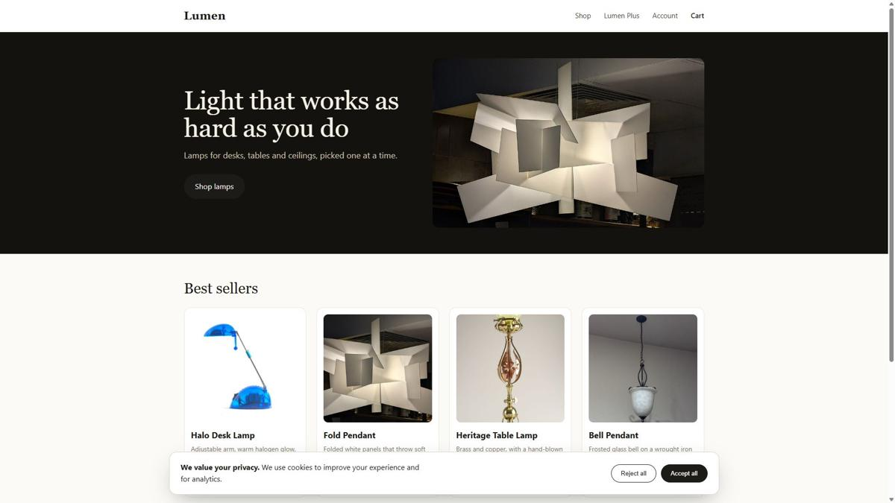
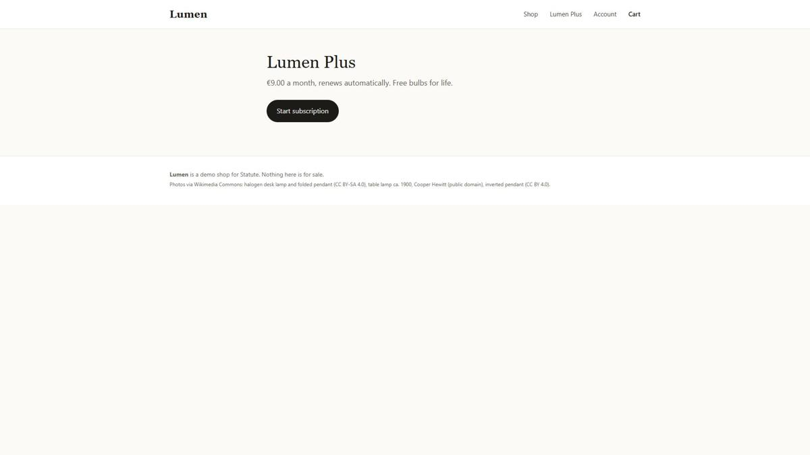

Kane CLI drives a real Chrome like a careful visitor: it finds the cookie banner, clicks Reject, opens a page and reloads. Every request and every click is sealed in a Kane evidence pack.
Built on Kane CLI
Kane CLI uses your app like a visitor: refuses the cookies, reads the checkout, cancels the plan. Code judges what it recorded against the law on every pull request and every night, and your agent fixes what fails.
The laws behind every check
Live audit

Give your coding agent Kane as a tool. It runs this same check against your local build, fixes the code, and checks again until Kane passes.
claude mcp add statute -- npx -y github:miracle352/statute mcpCheck consent on http://localhost:3000 with statute and fix what it finds.Prefer it automatic? The Claude Code hook blocks your agent's "done" until Kane passes. Or add the GitHub Action: it checks the pull requests that could break a law and watches your live site every night.
Kane CLI visits each site as a new visitor, clicks Reject wherever a cookie banner is shown, keeps browsing and records every request. Sites are anonymised. Evidence, not legal advice.
How it works

Kane CLI drives a real Chrome like a careful visitor: it finds the cookie banner, clicks Reject, opens a page and reloads. Every request and every click is sealed in a Kane evidence pack.
No model decides the verdict. Statute reads the pack: a public tracker list, the exact second of the Reject click, the visitor IDs sent to Google, and Google's own consent signals, which are shown but not counted.
On your own code, the report goes to Claude Code with the rule, the law and the evidence. The agent edits your app and nothing else.

Statute restarts the app and sends Kane back. A fix counts only when Kane says so, and Kane also clicks Accept to check the tags still load, so deleting analytics can't pass as a fix.
pull request styles/button.css nothing to check, 0 credits app/layout.tsx fbq( → consent lib/checkout.ts fee → price account/cancel.tsx → cancel every night, live site Tue 02:17 violation, issue opened Wed 02:17 passes, issue closed
A fixed law stays fixed. On every pull request Statute reads the diff and sends Kane only when the change touches tracking, prices or subscriptions. Every night it checks the live site too, because a tag added in Tag Manager never shows up in a pull request. It opens an issue on a violation and closes it when Kane sees the site pass.
Checks
After a visitor refuses cookies, no analytics or ads tag may load and no visitor ID may leave the browser.
A subscription started online can be cancelled online, in no more steps than it took to start.
Every mandatory fee is in the first price a shopper sees. Only taxes and shipping may be added at checkout.
Questions
No. Statute produces evidence: what a real browser did, when, and against which rule. Whether that breaks the law where you operate is a question for your lawyer.
No. Kane drives the browser. The verdict is computed by code from Kane's recorded traffic and action log, against a tracker list you can read in the repository.
The site blocked automated browsers, showed no banner to Kane's location, or gave no way to refuse. Many sites show banners only to visitors in the EU or UK. Run the CLI against your own build to control the conditions.
Public websites you own or may test. Live audits are limited per day because each one runs a real browser with Kane CLI; a site audited in the last 24 hours shows its saved result.